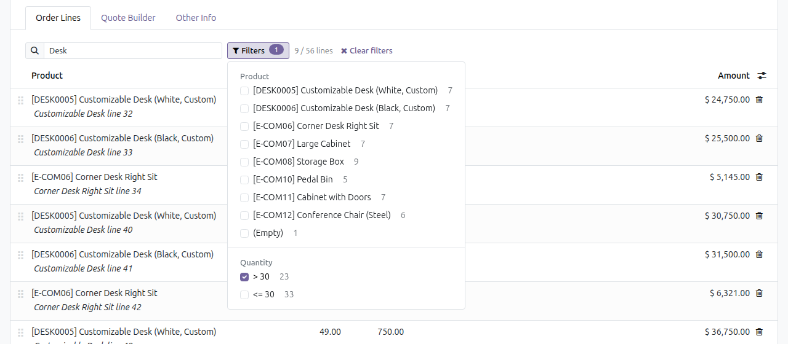
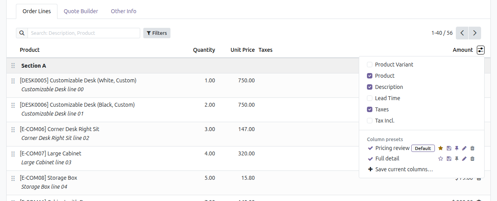
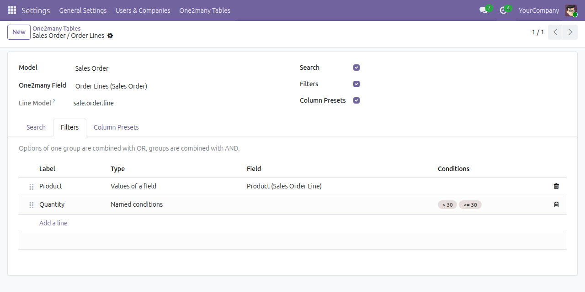

Long order lines, invoice lines, bills of materials or any other one2many table become hard to work with when they hold dozens or hundreds of rows. This module adds a search box, a multi-criteria filter panel and per-user column presets to the one2many tables you choose, without changing any data.
Type a keyword to search the configured fields over all lines of the record, not only the current page. Press Enter to apply now, Escape to clear.
Filter groups built from the data itself (char, selection, many2one, boolean fields), each value
with its number of lines, plus named conditions such as > 30 defined with a domain.
Computed and related fields are supported.
Save the visible optional columns under a name, then apply, update, rename, delete or star them. A preset marked as default is applied every time the table opens, on any browser.
The counter shows how many lines match. Filters stay applied when you change page, sort, switch tab or save the record.

Presets live in the usual optional columns menu. They are stored per user account and never affect other users.

Go to Settings → One2many Tables, pick a model and one of its one2many fields, then choose the searched fields, the filter groups and whether column presets are allowed. Tables that are not configured keep the standard Odoo behaviour. No code or XML is needed.

web. English and Vietnamese translations included.